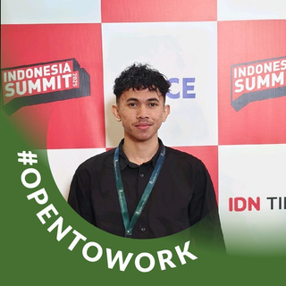
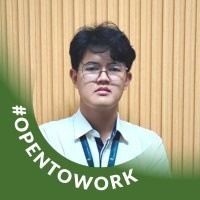
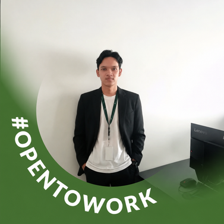
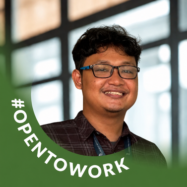
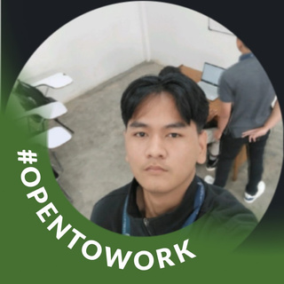
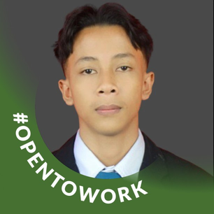

HORIZONU UNIFORM
Transformasi digital operasional seragam mahasiswa: Menghubungkan Hulu (Vendor Pabrik), Gudang Kampus, dan Bagian Keuangan hingga Hilir (Mahasiswa) berbasis data presisi dan aturan inventaris FIFO.
Objek & Komoditas Logistik
Pengadaan dan penyaluran tahunan ribuan paket perlengkapan mahasiswa baru: Jas Almamater, Kemeja Putih, Celana/Rok Bahan, Sepatu Dinas & Lab, serta Medical Kit tanpa perantara ritel komersial.
Tantangan Operasional Utama
Spreadsheet Excel 4.5 MB rawan crash saat ribuan mahasiswa mendaftar serentak, waktu antrean posko fisik 15–20 menit per mahasiswa, dan tebakan rasio order ke pabrik memicu dead-stock modal mengendap.
Our Team • Nirwana Development Team
Kolaborasi lintas disiplin dalam perancangan arsitektur, rekayasa kode, dan tata kelola platform HorizonU Uniform






Pemetaan Stakeholder & Aliran Fisik Barang
Aliran terpadu dari pabrik vendor hingga serah terima mahasiswa dengan prinsip "Data Mengunci Fisik"
Pabrik Garmen & Sepatu
- • Memproduksi paket seragam dan sepatu sesuai pesanan pengadaan kampus (PO).
- • Menerapkan standarisasi kode varian SKU per kategori dan ukuran.
- • Titik Barang: Pengiriman kardus stok ke gudang kampus (Inbound Logistics).
Gudang Logistik Kampus
- • Penerimaan fisik barang (StockReceive) dan pemeriksaan mutu (QC).
- • Pencatatan batch urutan FIFO (First-In, First-Out) dan nilai HPP unit.
- • Titik Barang: Transfer stok batch tertua menuju posko distribusi loket.
Staf Keuangan & Posko
- • Keuangan: Otorisasi status pelunasan biaya kuliah mahasiswa (Eligibility).
- • Staf Posko: Melayani meja pembagian fisik seragam di posko kampus.
- • Titik Kritis: Validasi identitas QR Code dan pencocokan ukuran saat fitting.
Mahasiswa (Customer)
- • Konsumen akhir yang memiliki hak jatah barang (Entitlement) sesuai prodi.
- • Mengisi profil ukuran mandiri di web dan menerima tiket jadwal pembagian.
- • Titik Info: Menunjukkan tiket QR Code beresolusi tinggi (NIM murni) di loket.
Evaluasi Kendala Operasional & Dampak Sistemik
Analisis akar masalah pengelolaan manual terhadap pembengkakan biaya, waktu kerja, dan penurunan mutu layanan
| Masalah Utama (Gejala Lapangan) | Akar Penyebab Masalah (Root Cause) | Dampak terhadap Biaya, Waktu, Stok & Layanan |
|---|---|---|
| 1. Ketidakcocokan Ukuran & Penumpukan Dead-Stock | Pemesanan pengadaan ke vendor pabrik hanya menggunakan tebakan rasio historis. Tidak ada sistem survey profil ukuran mandiri sebelum tender dibuka. | Dampak Stok & Biaya: Ukuran favorit (M/L) habis pada hari pertama pembagian, ukuran ekstrem (XS, 3XL) menumpuk bertahun-tahun. Modal kampus mengendap menjadi dead-stock. |
| 2. File Excel Sering Crash & Pengumuman Lambat | Departemen Keuangan memakai satu file spreadsheet raksasa (~4.5 MB, 19 sheet) untuk ribuan data mahasiswa. Pengiriman jadwal disebarkan manual via surel. | Dampak Waktu & Layanan: Aplikasi sering not responding atau data korup. Rekapitulasi memakan waktu berminggu-minggu dan info jadwal terlambat diterima mahasiswa. |
| 3. Bottleneck Loket Posko & Risiko Double-Claim | Pengecekan lunas, pencocokan hak prodi, dan paraf bukti serah terima dilakukan manual dengan mencentang map formulir kertas fisik. | Dampak Waktu & Akurasi: Waktu pelayanan lambat (15–20 menit per orang), antrean ratusan meter, serta rawan klaim ganda (double-claim) di loket atau hari berbeda. |
| 4. Susut Stok Liar & Valuasi HPP Buram | Penerimaan seragam dari vendor dengan harga berbeda tidak dicatat per batch FIFO dan tanpa kartu mutasi stok otomatis yang terikat ke transaksi loket. | Dampak Biaya & Akuntansi: Selisih barang susut (shrinkage) tidak terlacak penanggungjawabnya. Valuasi HPP dan analisis Gross Profit Margin (GPM) terdistorsi. |
Titik Kemacetan & Isolasi Data (As-Is State)
Hambatan komunikasi antarbagian yang memicu keterlambatan, inkonsistensi data, dan pembatalan layanan
Kebutuhan: Profil Ukuran & Jadwal
- • Asal & Tujuan: Mahasiswa mengisi formulir ke kampus dan menerima jadwal pembagian via email.
- • Titik Masalah: Google Form terpisah tanpa validasi SKU baku, memicu pengisian ganda dan rekapitulasi data staf terlambat berminggu-minggu.
Kebutuhan: Status Lunas (Eligibility)
- • Asal & Tujuan: Staf Keuangan mengekspor data pelunasan ke staf meja posko pembagian seragam.
- • Titik Masalah: Data terisolasi di file Excel lokal staf. Saat ada pelunasan baru di bank pada hari-H, staf posko tidak terupdate sehingga maba tertolak.
Kebutuhan: Kuota Hak & Kartu Mutasi
- • Asal & Tujuan: Staf posko memverifikasi paket hak prodi dan mencatat mutasi seragam yang keluar.
- • Titik Masalah: Penyerahan seragam dicatat di lembaran kertas. Pengurangan saldo stok gudang baru direkap malam hari, memicu risiko susut stok.
Kebutuhan: Purchase Order Agregat
- • Asal & Tujuan: Pengadaan kampus mengirim rincian jumlah potong seragam dan sepatu ke pabrik.
- • Titik Masalah: Purchase Order ke pabrik hanya estimasi kasar tanpa dasar profil data riil maba, memicu lead-time penukaran barang berbulan-bulan.
Pemilihan Arsitektur Sistem Informasi (HorizonU Uniform Engine)
Integrasi empat pilar sistem: ERP, SCM, POS, dan WMS dalam satu platform web modern
| Masalah yang Diselesaikan | Sistem & Modul Terpilih | Fungsi Sistem dalam Kasus | Manfaat Terukur |
|---|---|---|---|
| Excel Crash & Data Mahasiswa Terpecah | ERP Master & Entitlement Engine MySQL InnoDB Relational |
Mengelola master data mahasiswa, struktur base code 4-segmen, impor massal via Maatwebsite, serta matriks kuota hak (Entitlement) otomatis per jenjang dan prodi. | 100% Bebas Crash Excel, data terisolasi ACID, single source of truth. |
| Dead-Stock & Pengumuman Jadwal Lambat | SCM Demand Planning Portal Size Event & Schedule Hub |
Membuka event input profil ukuran mandiri mahasiswa (SizeChangeEvent), siaran jadwal terfilter per prodi, serta kalkulasi otomatis Demand vs Shortage untuk tender vendor. | Zero Dead-Stock, pengadaan pabrik presisi 100% sesuai ukuran riil. |
| Bottleneck Antrean & Risiko Double-Claim | POS QR Verification Engine BaconQrCode & HTML5 Scanner |
Penerbitan QR Code NIM beresolusi tinggi (Level H) dan eksekusi 6-Lapis Validasi Atomik via kamera webcam loket (Lunas, Sesi, Prodi, Gender, Sisa Hak, Stok Rak). | Waktu layan < 30 detik/mhs, nol risiko penyerahan ganda. |
| Susut Stok Gudang & Valuasi HPP Buram | WMS & FIFO Costing Engine StockBatch & Movement Ledger |
Melacak batch penerimaan vendor tertua (FIFO), pemotongan stok berkartu audit, rekonsiliasi Stock Opname fisik via variance kalkulator, serta analitik margin laba kotor. | Valuasi HPP FIFO real-time, audit transparan, cegah selisih fisik. |
Aliran 4-Fase Closed-Loop Supply Chain Engine
Konektivitas sistem end-to-end, pemrosesan transaksi atomik, dan closed-loop data feedback
Inbound & Batch FIFO
- • Pencatatan barang dari vendor garmen pada modul StockReceive.
- • Sistem menerbitkan ID batch terurut (FIFO Queue Sequence).
- • Pencatatan otomatis jurnal mutasi masuk (StockMovement IN) dan penetapan unit HPP batch.
Eligibility & Profiling
- • Keuangan mengaktifkan data mahasiswa lunas di EligibilityRecord.
- • Mahasiswa input profil ukuran badan mandiri di event portal.
- • Sistem menghitung Demand vs Shortage untuk acuan belanja pengadaan vendor.
POS QR & 6-Lapis Validasi
- • Staf memindai QR NIM mahasiswa di loket posko kampus.
- • Eksekusi 6-Lapis Validasi Atomik via pessimistic lock (lockForUpdate).
- • Pemotongan batch tertua otomatis (deductStockFifo) dan cetak tiket serah terima fisik.
Opname & Closed-Loop
- • Stock Opname fisik berkala menghitung selisih variance otomatis.
- • Penerbitan jurnal penyesuaian susut/surplus stok gudang.
- • Generate analitik Gross Profit Margin (GPM) dan laporan sisa stok untuk pimpinan.
Prioritas Implementasi & Manajemen Risiko Lapangan
Tahapan kesiapan operasional serta prosedur kontingensi darurat saat hari-H distribusi
Tahapan Kesiapan Sistem
- • Prioritas 1 (Master Data)
- • Prioritas 2 (Integrasi Portal)
- • Prioritas 3 (Kesiapan SDM)
SOP Kontingensi Hari-H Posko
- • RISIKO 1: Baterai HP Mahasiswa Mati / QR Rusak
- • RISIKO 2: Ukuran Rak Habis / Fitting Beda
- • RISIKO 3: Jaringan Internet Kampus Lambat / Dobel Klik
Dampak Strategis & Manfaat Nyata Implementasi
Transformasi operasional Departemen Keuangan Universitas Horizon Indonesia pasca-digitalisasi
Waktu Layan per Mahasiswa
- • Memangkas waktu layanan loket dari 15–20 menit menjadi di bawah 30 detik.
- • Pemindaian QR Code instan berbasis NIM dan validasi 6-lapis otomatis.
- • Mengeliminasi antrean panjang berdesakan di posko kampus.
Dead-Stock Seragam & Sepatu
- • Profiling ukuran mandiri maba sebelum tender vendor garmen dibuka.
- • Kalkulasi Demand vs Shortage otomatis memastikan pesanan selaras 100%.
- • Tidak ada lagi seragam ukuran ekstrem yang mengendap bertahun-tahun.
Valuasi FIFO Real-Time
- • Mengeliminasi ketergantungan pada spreadsheet Excel yang rawan rusak.
- • Pergerakan stok dicatat otomatis ke kartu mutasi berurutan batch FIFO.
- • Laporan Harga Pokok Penjualan (HPP) dan Gross Profit Margin (GPM) transparan.